Zennの「frontend」のフィード
フィード
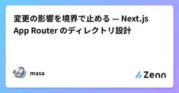
変更の影響を境界で止める — Next.js App Router のディレクトリ設計
Zennの「frontend」のフィード
はじめにフロントエンドの設計には、バックエンドの MVC やクリーンアーキテクチャのような、広く共通認識になった型がありません。それでも、サービスや機能が拡大するにつれて、設計の課題は確実に増えていきます。コンポーネントが肥大化する、バックエンドとの連携箇所が散らばる、パフォーマンスやキャッシュの改善で触る範囲が読めない。どれも最初は小さな違和感で、気づいたときには直すのが大変になっているものです。設計で大事なのは「後からでも柔軟に変えられるか」だと思っています。機能が増えてコードが肥大化してからでは、直すこと自体が技術的負債の返済になってしまうからです。特に Next...
13時間前
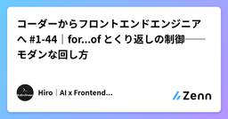
コーダーからフロントエンドエンジニアへ #1-44｜for...of とくり返しの制御──モダンな回し方
Zennの「frontend」のフィード
はじめに前回の #1-43 で、for文の3つ組（初期化・条件・更新）を扱いました。配列を回せるようになった一方で、こんな引っかかりも残ったはずです。const items = ["りんご", "みかん", "ぶどう"];for (let i = 0; i < items.length; i++) { console.log(items[i]);}やりたいことは「中身を順番に取り出す」だけなのに、カウンタの i が3回も登場します。しかも i を使うのは最後の items[i] の一箇所だけ。目的に対して、書く量が多すぎます。そこで登場するのが for...o...
1日前
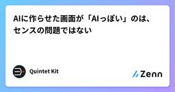
AIに作らせた画面が「AIっぽい」のは、センスの問題ではない
Zennの「frontend」のフィード
生成AIに画面を作らせると、毎回これが出てきます。全画面中央揃えのヒーロー。大きな見出し、サブテキスト、その下にCTAボタンアイコン付き3カラムの等幅カード紫から青のグラデーション背景、またはグラデーションの見出し文字ワードマーク＋リンク5個＋右端にCTAのヘッダー4カラムのリンク＋SNSアイコンのフッター純黒 #000000 の文字に、純白 #ffffff の背景見た瞬間に分かります。そして分かると信用されません。「中身も同じように既製品なのだろう」と読まれるからです。これはモデルの美的センスの問題ではありません。入力の欠落の問題です。 なぜ最頻値が出るのか...
1日前

ランディングページの表示速度を1.2秒→0.3秒にしました。やったことを全部書きます
Zennの「frontend」のフィード
1.2秒かかっていたランディングページが、0.3秒で開くようになりました。 ホスティングは月0円、Lighthouse 100。サーバーは1台も使っていません。先週、個人開発のバックエンドをVercelからFly.ioへ移した話を書きました。APIは1.9秒から60〜85msになりました。でも、そのAPIを叩くより前に、人はランディングページを開きます。 そこが遅ければ、バックエンドが何msだろうと、誰も知らないまま帰ります。本番の oshisuki.com、Lighthouse デスクトップ この記事に書いてあることやったことは4つで、どれもそのまま他のサイトに持っていけま...
1日前

ランキングUIの状態をどう設計するか：Genshinテーマの公開UIから考える
Zennの「frontend」のフィード
この記事は公開ページの画面と文言をブラックボックス観察した設計メモです。ソースコード、利用フレームワーク、内部ストレージ、性能値、実運用の構成を確認したものではありません。以下の型と状態図は、観測した操作を議論しやすくするための提案です。原神のキャラクターをランキングするUIには、画像一覧、検索、複数のティア、名前変更、追加、リセット、ローカル保存、PNG出力が現れます。見た目はドラッグ操作ですが、設計対象は「アイテムを移動する状態エディタ」です。 まず分けるべき状態検索文字列は表示状態、キャラクターの所属は編集状態、タイトルやティア名はドキュメント状態です。これらを一つの配...
1日前
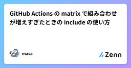
GitHub Actions の matrix で組み合わせが増えすぎたときの include の使い方
Zennの「frontend」のフィード
はじめに実務では複数のプロジェクトを同時にCIで実行するケースが多くなります。今回はサンプルコードをベースにincludeキーを使ったmatrixを説明します。 matrixとはmatrixは、1つのjobの定義で、複数のジョブを実行することができます。似たようなjobを複数実装した場合にはとても有効的です。例えば3つの異なるjobで起動するときは${{ matrix.token }}とmatrixをcontext経由で参照することができます。jobs: sample: runs-on: ubuntu-latest strategy: m...
1日前

AIに「設計図」を渡すか「批評」を渡すか——DESIGN.md を同条件A/Bで実測した
Zennの「frontend」のフィード
結論から同じモデル・同じお題で、参照ドキュメントだけを差し替えてランディングページを2枚生成させたら、トークン表まで書き込んだ「設計図」型ドキュメントの方が、設計思想を解説した「批評」型ドキュメントより明確に良い成果物を出した。ただし、批評型だけが勝った箇所が1つあり、そこにこの2形式の使い分けの本質があった。 背景：DESIGN.md という形式AIにUIを作らせると、紫のグラデーションと角丸カードの「AIっぽい」画面が出てくる。コードが書けないのではなく、「良い」の定義がモデルに渡っていないのが原因だ。これを参照ドキュメントで解決するのが DESIGN.md という形式...
1日前
TanStack Virtual を使ってみた話
Zennの「frontend」のフィード
初めまして。ギークプラスのフロントエンドエンジニアの杉平と申します！今回は、サプライチェーン計画のプロダクトで在庫計画の画面をリニューアルしたときのお話です。作ったのは、商品ごとのカードを縦に積んでいって、開くと中に大きな表が出てくる画面でした。表の縦軸は「拠点 × 指標」で、拠点 1 つにつき在庫数や入出荷数といった指標が並びます。横軸は時間で、日次・週次・月次を切り替えられます。これが最大でどれくらいになるかというと、拠点 100 件 × 指標 9 種類で 900 行。日次は今日を挟んで前後 365 日ぶん出すので 731 列。掛けると 約 66 万セルです。1 商品ぶんでこの...
2日前

コーダーからフロントエンドエンジニアへ #1-43｜for文──決まった回数をくり返す基本
Zennの「frontend」のフィード
はじめに前回までで、配列を「作る・見る・出し入れする・コピーする」が一通りそろいました。ただ、まだ肝心なことができません。全部の要素に、同じ処理をすることです。const items = ["りんご", "みかん", "ぶどう"];console.log(items[0]);console.log(items[1]);console.log(items[2]);3件ならこれで済みます。では、APIから返ってきた100件は？ 件数が毎回変わる商品リストは？ 手で並べる方法は、ここで完全に破綻します。そこで登場するのが**くり返し（ループ）**です。今日扱う for 文は...
2日前

Agentation で Web ページ上の UI に直接プロンプトを入力
Zennの「frontend」のフィード
AI とフロントエンドの開発を行う上で、ちょっとした修正の依頼も意図がうまく伝わらないことが多々あります。一方で、AIに直接ブラウザを操作させる方法もありますが、「このボタンの角を丸めて欲しい」というような要望を伝えるためだけに利用するには時間やコンテキストの面からオーバースペックに感じる人もいるのではないでしょうか。そんな時に便利なのが、ブラウザの要素に直接プロンプトを添付できる Agentation です。 Usage導入方法より先に実際に使ってみるのが良いかと思います。公式サイトで利用可能になっています。まず、画面右下に表示される黒いボタンをクリックすると以下のように...
2日前

Chromeでしか動作確認していなかったので、3つの機能が壊れていた話
Zennの「frontend」のフィード
Chromeでは全部動いていましたブラウザだけで動くファイル変換ツール「なんでも工房」を個人で作っています。画像・PDF・動画あわせて30種類ほど。全部クライアントサイドで、ファイルはサーバーに送りません。https://file-converter-neon-iota.vercel.app/開発中の動作確認はずっとChromeでやっていました。全ツールが動き、レイアウトも崩れず、コンソールにエラーもゼロ。ある日、思い立ってSafari（WebKit）とFirefoxでも同じ確認を回してみたら、3つの機能が壊れていました。しかも全部、エラーも警告も一切出さずに壊れていたタイ...
2日前
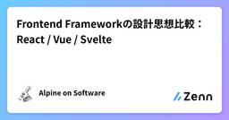
Frontend Frameworkの設計思想比較：React / Vue / Svelte
Zennの「frontend」のフィード
前提：3つのフレームワークは「異なる問い」に答えている現代フロントエンドの文脈では、React・Vue・Svelte を同一軸で比較し、「どれが優れているか」を論じることが多くあります。しかし、現場で実際に困るのは、性能差の数％ではなく、**「そのフレームワークが前提としている世界観と、自分たちのプロジェクトが噛み合うかどうか」**です。この3者はそもそも異なる問題設定に答えるために生まれたものであり、単純な優劣比較には本質的な無理があります。本稿では、各フレームワークの以下の2点に着目して、思想としての比較を試みます。設計上の中心的判断（Core Design Deci...
3日前
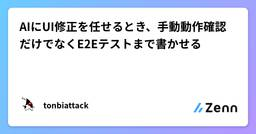
AIにUI修正を任せるとき、手動動作確認だけでなくE2Eテストまで書かせる
Zennの「frontend」のフィード
はじめにAIにUIの修正を依頼すると、実装だけでなくブラウザを操作して動作確認まで行わせることができます。ただ、毎回AIに「画面を開いて確認して」と依頼するだけでは、その場では確認できても、次の修正で同じ不具合が再発したときに自動で検知できません。そこで、再発しやすいUIの振る舞いについては、手動の動作確認だけで終わらせず、PlaywrightなどのE2Eテストとしてコードに残す方が有効です。この記事では、AIにUI修正を任せる場合に、手動動作確認とE2Eテストをどう使い分けるかどのようなUIをE2EテストにするべきかE2Eテストをどのタイミングで実行するか修正とテ...
3日前

コーダーからフロントエンドエンジニアへ #1-42｜配列のコピーと参照──= ではコピーできない
Zennの「frontend」のフィード
はじめに前回は slice() と splice() を扱いました。最後にこんなコードが出てきたのを覚えているでしょうか。const original = ["A", "B", "C"];const same = original;original.splice(1, 1);console.log(same); // ["A", "C"] ← 触っていないのに変わっているあのとき「same = original は同じ配列を2つの名前で指しているだけ」と書きました。今回はその正体を、正面から扱います。不思議なのは、数値や文字列では同じことが起きないという点です。= ...
3日前
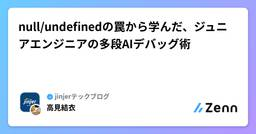
null/undefinedの罠から学んだ、ジュニアエンジニアの多段AIデバッグ術
Zennの「frontend」のフィード
導入：元営業・実務経験ゼロの私が、2か月で新規実装を任されるまでこんにちは！フロントエンド開発チームの高見です。私は営業部門出身で、開発チームに異動するまで実務でのコーディング経験は全くありませんでした。そんな私が、異動からわずか2か月で「CSVダウンロード」という新規機能の実装を任されました。もちろん丸投げではなく、チームの手厚いレビュー体制があってこその成長ですが、その急速なキャッチアップを支えていたのが「AIをコード生成ツールではなく、思考を深める家庭教師として使い倒す」という勉強法でした。今回は、ある日のバグ調査を例に、「限定情報型」と「全体検証型」、2つの役割のA...
3日前
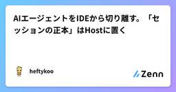
AIエージェントをIDEから切り離す。「セッションの正本」はHostに置く
Zennの「frontend」のフィード
IDEを閉じてもAIエージェントが走り続ける。ここまでは、プロセスを常駐させれば実現できる。厄介なのは、そのセッションをデスクトップとWebから同時に開いたときだ。片方でツール実行を承認し、もう片方では古い画面のまま停止を押す。再接続したクライアントは、どの操作まで反映済みなのか。チャット履歴を保存しただけでは決められない。長時間動くエージェントでは、モデルより先に「誰が状態の正本を持つか」を設計したほうがいい。 UIの寿命を実行の寿命から外すVS CodeのAgent Hostは、エージェントのセッションをエディタとは別のプロセスで扱う。エディタやフォルダを閉じたあともセッシ...
3日前
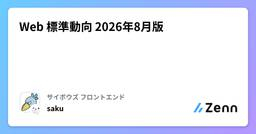
Web 標準動向 2026年8月版 19
19
Zennの「frontend」のフィード
こんにちは！ サイボウズ株式会社 デザインテクノロジストの saku (@sakupi01) です。 はじめにサイボウズは 2025 年 4 月より、W3C のメンバーに加入しました。https://blog.cybozu.io/entry/joining-w3c標準化プロセスに関わることができるようになるための最初の一歩として、フロントエンドエンジニアの一部のメンバーは積極的に Web 標準のキャッチアップを行っています。そこで、毎月メンバーが興味を持った Web 標準に関する話題や、実際に標準化プロセスに関わることができた場合にはその報告などを 1 つの記事としてまとめ、...
4日前

【Part3】【No.013】Reactの部品ごとに表示を変える最初の一歩 ― Propsで値を渡す最低限
Zennの「frontend」のフィード
みなさん、こんにちは！ペンギンエンジニアです！前回の012で、Greeting という部品を定義して、3つ並べて使って、ファイルに分けるところまでやりました。ただ、3つ並べても表示は全部「こんにちは、React！」のまま。同じ表示にしかならないという物足りなさを、あえて持ち帰ってもらう回でしたね。予告どおり、今日はその物足りなさを解消します。先に種明かしをすると、Propsも特別な仕組みではありません。コンポーネントがただの関数なら、Propsはただの引数です。筆者はSES現場で、同じ見た目のUIをコピペで3つ作って、仕様変更のたびに3箇所を直す羽目になったコードを何度も...
4日前
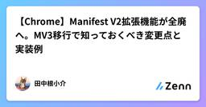
【Chrome】Manifest V2拡張機能が全廃へ。MV3移行で知っておくべき変更点と実装例
Zennの「frontend」のフィード
GoogleがChrome Web StoreからManifest V2（MV2）ベースのブラウザ拡張機能の削除を開始したことが海外のテックコミュニティ（Hacker News等）で大きな話題となっています。これには、広く使われている広告ブロック拡張機能「uBlock Origin」などの主要なMV2拡張機能も含まれています。本記事では、このニュースの背景と、Webエンジニアや拡張機能開発者が知っておくべきManifest V3（MV3）への移行ポイントおよび具体的な実装例を解説します。 なぜ今注目されているのか（背景）Googleは数年前からブラウザ拡張機能の新規格である**...
5日前
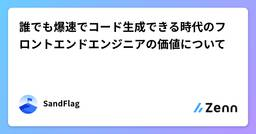
誰でも爆速でコード生成できる時代のフロントエンドエンジニアの価値について
Zennの「frontend」のフィード
爆速AIコーディング時代に、フロントエンドエンジニアはどこで価値を出していくのか誰もが爆速でコードを生成できるようになり、コーディング能力のかなり大きな部分がAIによって補完されるようになってきました。これまでは、コーディング力を身につけるために、アルゴリズム問題を自力で解いたり、一つひとつ文法の意味をググって調べたりしながら、少しずつ理解を積み上げていくことが一般的だったと思います。もちろん、こうした学習そのものが不要になるわけではありません。ただ、AIに質問すればコードの意味を説明してもらえたり、実装例まで提示してもらえたりする現在、そのような形で学ぶ機会は、これから少し...
5日前